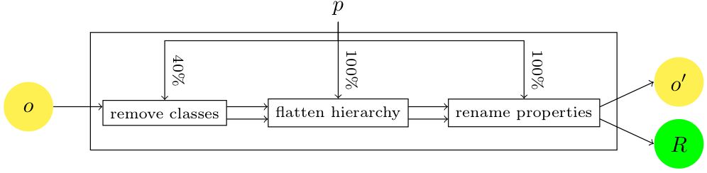

Alignment API: test generation framework
The Alignment API implementation offers facilities to
automatically generate data test sets that can be used for
evaluating alignments.
These facilities works only on OWL ontologies and are dependent on
the Jena API (which is included in the API lib directory).
It allows for generating altered ontologies from a seed ontology
and generating the reference alignment between the two ontologies).
Generating tests
Generating tests from the command line

It is possible to use the command line command TestGen in
order to generate tests.
It can be invoked for generating only one test:
$ java -Xmx1200m -cp $JAVALIB/procalign.jar fr.inrialpes.exmo.align.cli.TestGen -u outputurl -o outputdir -Dparameter=value seedontology
such that:
- seed ontology is the ontology which is altered for producing the test;
- outputurl is the url prefix that will be used for the generated ontology;
- outputdir is the directory in which the test will be generated;
- -Dparameter=value are the parameters used for generating this tests (see Alterator section below)
For instance:
$ java -Xmx1200m -cp $JAVALIB/procalign.jar fr.inrialpes.exmo.align.cli.TestGen -u http://example.com/mynewtest -o mynewtest -DremoveComments=1. -DrenameClasses=.75 -DremoveProperties=.5 biblio.owl
It may also be used for generating a whole test set (see below) by:
$ java -Xmx1200m -cp $JAVALIB/procalign.jar fr.inrialpes.exmo.align.cli.TestGen -t testsetclass -u outputurl -o outputdir seedontology
In which, testsetclass is the class name of an implementation
of TestSet (see below) to be used for generating a testset.
For instance:
$ java -Xmx1200m -cp $JAVALIB/procalign.jar fr.inrialpes.exmo.align.cli.TestGen -t fr.inrialpes.exmo.align.gen.BenchmarkGenerator -u http://example.com/mynewtestset -o mynewtestset -Dcontinuous=1 biblio.owl
generates part of the initial OAEI benchmarks.
Generating tests from Java
The equivalent to the command line invokations may be obtained in Java
by the simple:
TestGenerator tg = new TestGenerator();
tg.setDirPrefix( dir );
tg.setURLPrefix( url );
tg.modifyOntology( fileName, (Properties)null, testNumber, params );
TestSet gb = new BenchmarkGenerator();
gb.generate( params );
Ontology alterators
The tests are generated from the notion of Alterators.
Ontology alterators are classes, implementing
the Alterator interface.

The test framework is based on the notion of Alterator instances of
the fr.inrialpes.exmo.align.gen.Alterator. An
alterator, takes as input an ontology (Jena OntModel) and an
alignment (Alignment) and generates an altered ontology and
alignment. Following the schema of the figure.
Predefined alterators
The available predefined alterators are:
- EmptyModification []
- generates a test in which the initial ontology is not
altered. This test is used in test sets (see below), for the root test.
- AddClasses [addClasses=p]
- adds p% classes.
- AddProperties [addProperties=p]
- adds p% properties.
- FlattenLevel [levelFlattened=n]
- removes all classes of level n (their subclasses are
directly conenected to their superclasses).
- RemoveClasses [removeClasses=p]
- removes p% of classes.
- RemoveComments [removeComments=p]
- removes p% of comments.
- RemoveIndividuals [removeIndividuals=p]
- removes p% of individuals.
- RemoveProperties [removeProperties=p]
- removes p% of properties.
- RemoveRestrictions [removeRestrictions=p]
- removes p% of restriction.
- RenameClasses [renameClasses=p]
- renames p% of classes in various ways [default: random]
- RenameProperties [renameProperties=p]
- renames p% of properties in various ways [default: random]
- SuppressHierarchy [noHierarchy]
- suppresses all subclasses relations (but to owl:Thing)
Adding new alterators
The alterator interface is rather complex.
However, most of the functions of alterators are available in
the BasicAlterator, so that creating a new alterator requires
only to write the modify( Properties ) method if it extends
BasicAlterator.
An alterator follows a particulat lifecycle:
Creation
The Alterator is created either:
- from a seed ontology and generate the alignment between this ontology itself
- from a previous alterator from which it will take the output ontology and alignment as input.
So a "virtual" constructor should be provided in which the alterator
is created from a previous alterator:
public Alterator( Alterator om );
Once this has been done, it is possible to retrieve the namespace of
the input ontology (which is the target of the previous alignment if
an alterator has been used for creating the alignment):
public String getNamespace();
Modification
The modify method applies the alteration to the input:
public Alterator modify( Properties params );
public Properties getProtoAlignment();
public OntModel getProtoOntology();
public ClassHierarchy getHierarchy();
Relocation
It is often useful to relocate the results, i.e., to change their
namespaces in both the ontologies and alignments to output. This is
achieved with the following methods (the namespaces are those of the
source and target ontology respectively):
public void relocateTest( String namespace1, String namespace2 );
public void relocateTest( String namespace2 );
Exporting the results
Finally, results can be obtained through the two following primitives:
public Alignment getAlignment();
public OntModel getModifiedOntology();
Test sets
Full test sets can be generated from one seed ontology (see Figure). For that
purpose, the structure of the test set is defined through a
structure which described how a test is generated from scratch or from
other tests in the test set.

From this structure it is possible to generate the test set with
different modalities which are specified through parameters.
Predefined test sets
Benchmark generator
The BenchmarkGenerator class is an example of a whole test set
defined at once.
It combines various alterators in a specified way.
This can be applied to any seed ontology (that Jena
is able to parse).
Adaptive benchmark generator
Not available yet.
Hidden ontology generator
Not available yet.
Adding new test sets
Designing a whole test set can be achieved, as it is done for
Benchmarks, by extending the TestSet class and creating
a hierarchy of tests (each one built from another; but this can be
achieved by having all tests generated from the init ontology).
New test sets can be obtained by extending the TestSet
abstract class. The only abstract method is:
public abstract void initTestCases( Properties params );
TestCase initTests( String labelInitTest );
void addTestChild( String labelParentTest, String labelNewTest,
Properties alterationSpecification );
Ontology network alterators
Ontology network alterators obey to the OntologyNetworkWeakener interface.
This interface is very simple since it consists of one single
method: weaken taking as argument an onology network, an int
(absolute value) or a double (percentage) characterizing the amount of
alteration and a set of optional parameters in a Properties
object.
Each alterator returns a brand new ontology network with eventually
modified alignments.
Ontology network alterators cannot be obtained at command line.
Predefined network alterators
Some alterators are available with the Alignment API implementation:
- NetworkAlignmentDropper
- randomly drops n% of all alignments in the network. n is a number between 0. and 1.
- NetworkAlignmentWeakener
- suppresses n% of the correspondences at random in each alignments. n is a number between 0. and 1.
A threshold parameter tells if the corrrespondences are suppressed at random (false) of by suppressing the n% of lower confidence (true)
- NetworkCorrespondenceDropper
- suppresses n% of the correspondences at random in all alignments (globally). n is a number between 0. and 1. a threshold parameter tells if the corrrespondences are suppressed at random (false) of by suppressing the n% of lower confidence (true).
- NetworkDeconnector
- (Not implemented) suppresses alignments in the ontology network so that it retain n-connectivity, i.e., any pairs of ontologies connected by less than n alignments are still connected through at most n alignments.
http://alignapi.gforge.inria.fr/testgen.html
$Id$